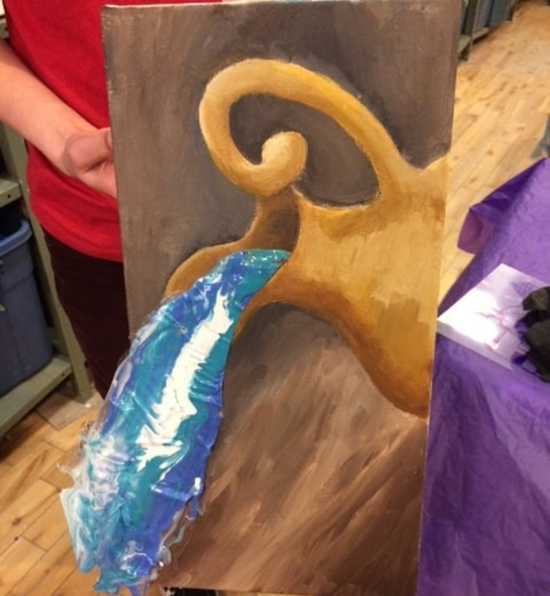
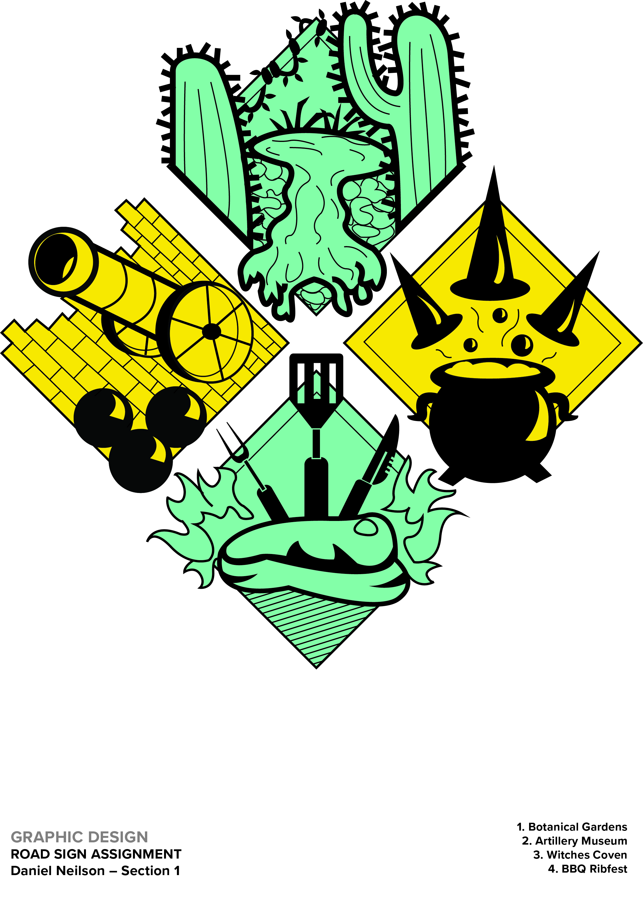
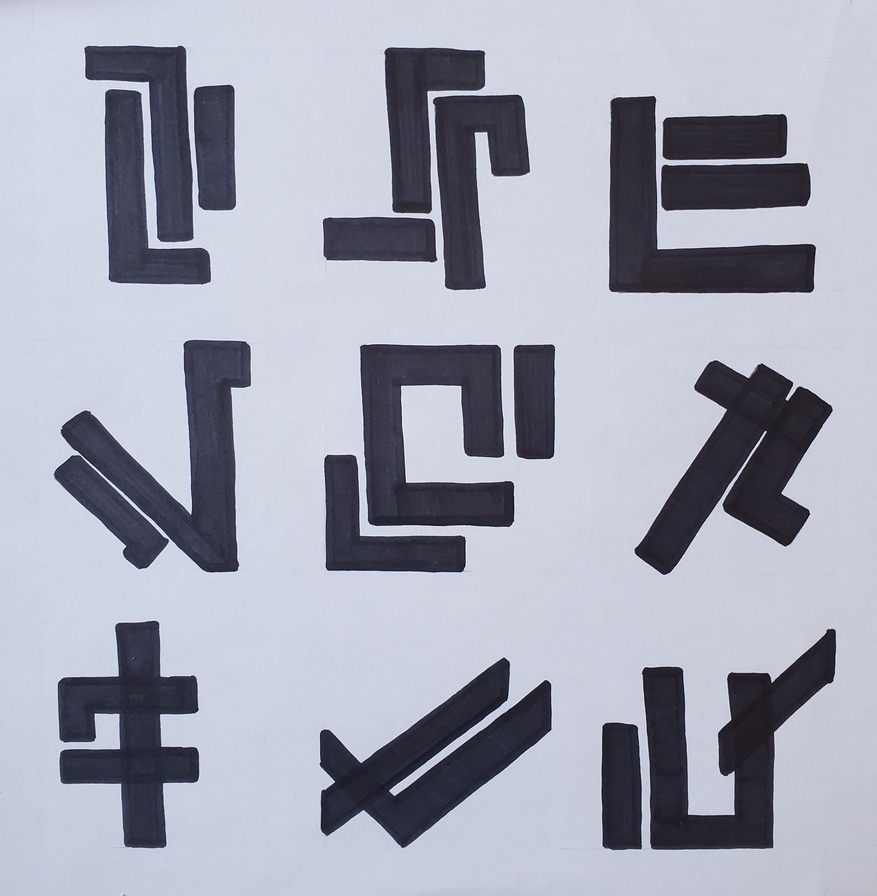
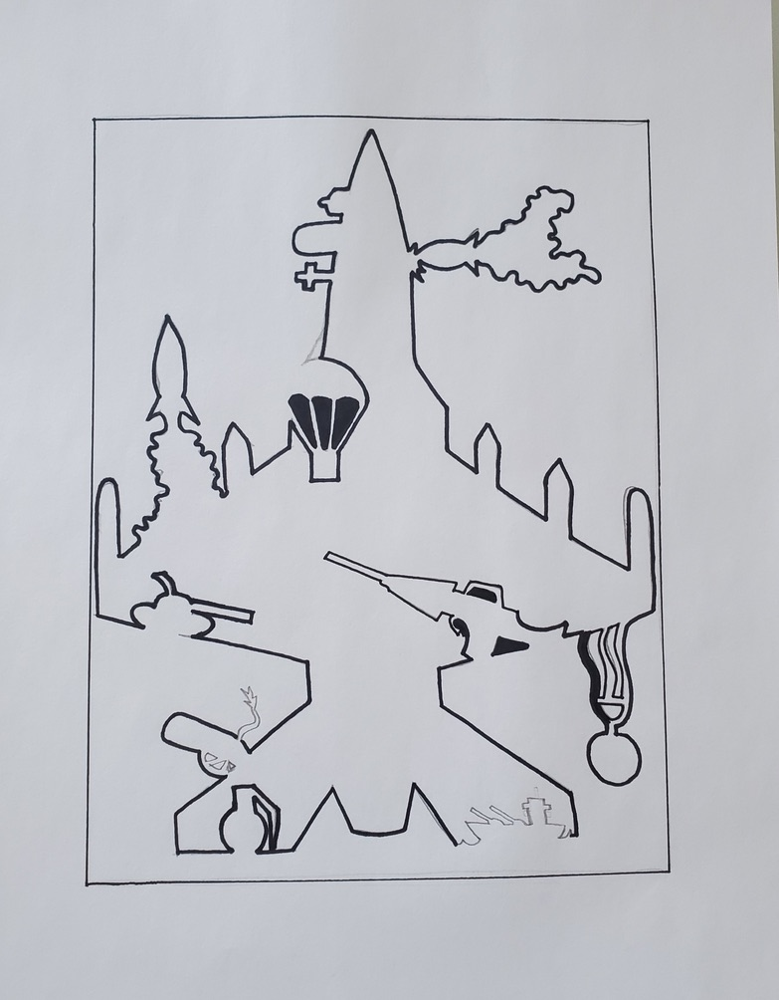

This is a vector image I created of my dog named Basil. I took a photo of him and brought it into illustrator where I changed the opacity to 50% so I could trace over it. I then filled the piece in with color and added a red collar.

I took this photo as apart of a photo collage for one of my first year graphic design courses. i chose to include it as it has nice contrast, color usage, and composition. I tweaked things such as the hue and saturation of the photo in photoshop.
This was a painting I created of a water jug in acrylic. I had the unique idea to create some sort of 3D effect on a group of paintings using a gel based medium. So that it what I used to create the water that flows off the canvas.
This piece is one I created in my first year of the grraphic design course. We had to create a roadsign using 4 randomly selected words the prof provided to us. I created the designs based around what the words represented to me.
For Typography class in year one we had to create a makeshift unique font family. The whole goal was to be able to create something where all the letters looked like they could be part of the same type family. I chose to use a simple design with a slanted look.
The plane was a part of a graphic design semester 1 project. we had to draw 4 images in black and 4 images in white and then combine them all into one picture. All the images had to be related the same theme somehow so I chose military/warfare.